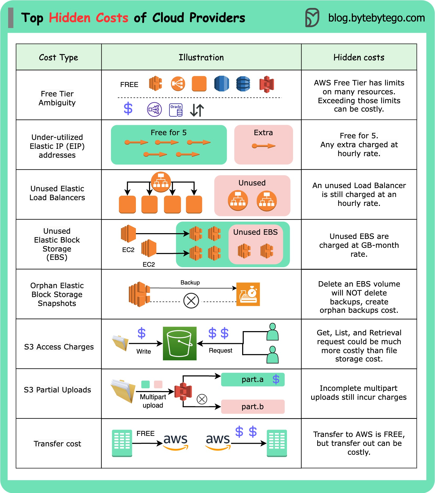

While it may be inexpensive or even free to get started, the complexity often leads to hidden costs, resulting in large cloud bills.
The purpose of this post is not to discourage using the cloud. I’m a big fan of the cloud. I simply want to raise awareness about this issue, as it’s one of the critical topics that isn’t often discussed.

While AWS is used as an example, similar cost structures apply to other cloud providers.
Free Tier Ambiguity: AWS offers three different types of free offerings for common services. However, services not included in the free tier can charge you. Even for services that do provide free resources, there’s often a limit. Exceeding that limit can result in higher costs than anticipated.
Elastic IP Addresses: AWS allows up to five Elastic IP addresses. Exceeding this limit incurs a small hourly rate, which varies depending on the region. This is a recurring charge.
Load Balancers: They are billed hourly, even if not actively used. Furthermore, you’ll face additional charges if data is transferred in and out of the load balancer.
Elastic Block Storage (EBS) Charges: EBS is billed on a GB-per-month basis. You will be charged for attached and unattached EBS volumes, even if they’re not actively used.
EBS Snapshots: Deleting an EBS volume does not automatically remove the associated snapshots. Orphaned EBS snapshots will still appear on your bill.
S3 Access Charges: While the pricing for S3 storage is generally reasonable, the costs associated with accessing stored objects, such as GET and LIST requests, can sometimes exceed the storage costs.
S3 Partial Uploads: If you have an unsuccessful multipart upload in S3, you will still be billed for the successfully uploaded parts. It’s essential to clean these up to avoid unnecessary costs.
Data Transfer Costs: Transferring data to AWS, for instance, from a data center, is free. However, transferring data out of AWS can be significantly more expensive.